装備Gear
章ごと・職ごとの武器、巨神の武器、階級と特性、共鳴の炉、装飾品、防具。周回して揃えます。Weapons per chapter and job, titan weapons, tiers and affixes, the Resonance Forge, accessories and armor. Collect them across repeat runs.
武器Weapons
どの章にも 6 つの職の武器があり、町の店・頼み・敵の落とし物で手に入ります（職は持った武器で決まります）。そのうえで巨神ごとに、エピックの基本の武器と、ヒロイックの専用武器があります。剣・鉾・短剣・槍・銛・盾・弓・斧・鎚と、形もさまざまです。Every chapter has weapons for all six jobs, from shops, requests and enemy drops (the weapon sets the job). On top of that, each titan drops Epic base weapons and Heroic dedicated ones, in many shapes: sword, glaive, dagger, trident, harpoon, shield, bow, axe and hammer.
| 武器Weapon | 型Type | 巨神Titan | 階級Tier |
|---|---|---|---|
| 重Heavy | 岩鯨Stone Whale | エピックEpic | |
| 長Long | 岩鯨Stone Whale | ヒロイックHeroic | |
| 速Fast | 岩鯨Stone Whale | ヒロイックHeroic | |
| 長Long | 潮殻Tide Shell | エピックEpic | |
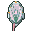 珊瑚の盾Coral Shield | 守Guard | 潮殻Tide Shell | エピックEpic |
| 速Fast | 潮殻Tide Shell | ヒロイックHeroic | |
| 長Long | 潮殻Tide Shell | ヒロイックHeroic | |
| 遠Ranged | 雷翼Thunder Wing | エピックEpic | |
| 速Fast | 雷翼Thunder Wing | ヒロイックHeroic | |
| 長Long | 雷翼Thunder Wing | ヒロイックHeroic | |
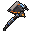 余燼の戦斧Ember War Axe | 重Heavy | 余燼Ember | エピックEpic |
| 重Heavy | 余燼Ember | ヒロイックHeroic | |
| 長Long | 余燼Ember | ヒロイックHeroic |
型は技との噛み合いです。スキルのページを見てください。Types describe synergy with skills; see the skills page.
階級Tiers
| 階級Tier | 特性の数Affixes | 主な入手元Main source | 役割Role |
|---|---|---|---|
| コモンCommon | 0 | 雑魚、通常の宝箱Trash mobs, normal chests | 素材・入門用Materials, entry level |
| アンコモンUncommon | 0 | 宝箱、広間の撃破Chests, hall clears | 序盤の繋ぎ（食料・矢など）Early stopgaps (food, arrows) |
| レア（青）Rare (blue) | 1–2 | 心臓の図鑑の品（甲殻・基本の武器・護符）Heart codex items (armor, base weapons, charms) | 各巨神の主力Mainstay of each titan |
| エピック（紫）Epic (purple) | 1–2 | 心臓・中ボスの通常の報い、交換Regular hearts and mid-boss rewards, trading | 巨神の基本の武器と、護符・装飾Base weapons, charms and accessories |
| ヒロイック（橙）Heroic (orange) | 2–3 | 心臓・中ボスの低確率、初回の選択、天井保証Low-chance drops from hearts and mid-bosses, first-clear choice, pity guarantee | 専用の武器と、技を書き換える武器Dedicated weapons, and the weapons that rewrite skills |
| アーティファクト（金）Artifact (gold) | 2–3 | 深淵の心臓と番人Abyss hearts and the warden | 深淵の専用装備Abyss-only gear |
武器の見た目は階級で輪郭が変わります。コモンからレアで部品が一つ増え、ヒロイック以上は輪郭を変える大きな部品が付きます。強化が +5 以上（覚醒）になると、縁の金属が一段明るくなり、刃の中心に光の筋が入ります。A weapon's silhouette changes with tier: Common to Rare adds a part, and Heroic and above add a large part that changes the outline. Enhancement of +5 or more (awakening) brightens the rim metal and adds a glowing line to the blade.
- 入手は個人ごとの抽選です。他人が取っても、自分の機会は減りません。Drops are rolled per player; someone else's drop never reduces your chance.
- 「巨神の記憶」の天井（保証）があり、運が悪い周回が続いても報いがあります。A "titan memory" pity system guarantees a Heroic item after a run of bad luck.
- 人数が増えると敵と心臓は強くなりますが、報酬は減りません。More players make enemies and hearts tougher, but rewards are never reduced.
特性（アフィックス）Affixes
レア以上の武器と防具には特性が付きます（レア・エピック 1〜2、ヒロイック・アーティファクト 2〜3）。値は幅の中でランダムで、ヒロイック以上は幅が 1.25 倍です。Rare and better weapons and armor carry affixes (Rare and Epic 1-2, Heroic and Artifact 2-3). Values roll within a range; Heroic and above use 1.25x ranges.
| 付く先On | 効果の例Example effect | 幅（レア）Range (Rare) |
|---|---|---|
| 武器Weapon | 攻撃力 +5%+5% attack | 4–8% |
| 武器Weapon | 攻撃速度 +6%+6% attack speed | 4–10% |
| 武器Weapon | 吸血 3%（0.25 秒に一度、1 回 2 まで）3% lifesteal (once per 0.25 s, max 2 per hit) | 2–4% |
| 武器Weapon | 最大マナ +7+7 max mana | 4–10 |
| 武器Weapon | 技の待ち −6%（合計の上限 15%）-6% skill cooldown (cap 15%) | 4–10% |
| 武器Weapon | 木の印: 岩・風・潮・灰・骨の技の力 +6%（1 装備に 1 つまで）Tree mark: +6% power for Rock, Wind, Tide, Ash or Bone skills (max one per item) | 5–10% |
| 防具Armor | 防具強度 +0.5+0.5 armor toughness | 0.5–1.0 |
| 防具Armor | 最大体力 +0.5 ハート+0.5 max hearts | +0.25–0.5 |
| 防具Armor | 移動速度 +2%+2% movement speed | 1.5–3% |
| 防具Armor | 受ける傷 −2%（合計の上限 10%）-2% damage taken (cap 10%) | 1.5–3% |
| 防具Armor | 最大マナ +4+4 max mana | 3–6 |
| 防具Armor | ノックバック耐性 +8%+8% knockback resistance | 5–10% |
- 同じ種類は一つの装備に二度付きません。The same affix never appears twice on one item.
- 武器の特性は利き手に持つとき、防具の特性は着ているときだけ効きます。Weapon affixes work when held in the main hand; armor affixes while worn.
- 護符・護石・装飾品には付きません（重ねて持てるため）。Charms, talismans and accessories carry none, since they stack in slots.
共鳴の炉Resonance Forge
岩鯨の背に着いた台などにある炉です。作ることもできます。何も預からないので、何人でも同時に使えます。Found near the Stone Whale's tail platform, and craftable. It holds nothing, so any number of players can use it at once.
強化（+0〜+10）Enhance (+0 to +10)
その巨神の素材と共鳴の結晶で 1 段ずつ上げます。失敗はありません。武器は 1 段ごとに攻撃力の 3%（+10 で ×1.3）、防具は 1 段 1 部位ごとに強靭 +0.3。+5 で覚醒し、固有効果が強まります。Spend that titan's materials and resonance crystals to raise one step at a time; no failure. Weapons gain 3% attack per step (x1.3 at +10), armor +0.3 toughness per piece per step. At +5 it awakens and unique effects strengthen.
分解Dismantle
ヒロイック以上は共鳴の欠片 10 ＋素材の半分、それより下の階級はその巨神の素材になります。特性の付く品は共鳴の結晶も出ます。Heroic and above yield 10 resonance fragments plus half the materials; lower tiers yield that titan's materials. Items with affixes also give resonance crystals.
再鍛造Reforge
結晶 1 つで、特性をすべて振り直した候補を 1 組作ります（3 組まで）。候補のどれか、または「今のまま」を選んで確定するので、弱くなることはありません。One crystal makes a candidate set with all affixes rerolled (up to three). You pick one or "keep current", so you can never end up worse.
交換Trade
巨神の共鳴の欠片で、その巨神の専用の品 3 つから好きな物を選んで手に入れます。Spend a titan's resonance fragments to pick any of that titan's three dedicated items.
装備の自由度Gear freedom
特性のほかに、穴・欠片・ルーン・アスペクト・世代が装備を育てます。特性の付くレア以上の武器と防具が対象です。Beyond affixes, sockets, shards, runes, aspects and generations let gear grow. They apply to Rare and better weapons and armor.
| 仕組みSystem | 決まりRule |
|---|---|
| 穴Sockets | レア以上は 0〜2 個（上の階級ほど多く出ます）。共鳴の炉の打ち直しで必ず足せます（最大 2）。Rare and better gear has 0 to 2 sockets, more often at higher tiers. The forge can always add one (up to 2). |
| 欠片Shards 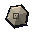 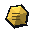 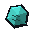 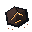 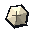 | 岩・風・潮・灰・骨の 5 種。穴に差すとそのタグが 1 つ数えられ、装備に小さな数字が付きます。心臓や部屋の報酬で出ます。Five kinds. Socketed, each counts as one tag for skills and adds a small stat. Dropped by hearts and rooms. |
| 技のルーンSkill runes | 使う技 1 つに力 +10〜30% か待ち −10〜20%。穴に差します。1 つの技に効くのは 1 枚です。+10 to 30% power or -10 to 20% cooldown for one active skill, socketed. Only one rune applies per skill. |
| アスペクトAspects | 書き換えの武器の力を炉で抜き取って「芯」にし、レアの武器・防具に刻めます。その装備を持つ（武器）か着る（防具）あいだ、その書き換えが効きます。At the forge extract a rewrite weapon's effect into a core and engrave it on a Rare weapon or armor. It works while you hold (weapon) or wear (armor) that piece. |
| 世代Generations | 転生するたびに、持ち物の特性付き装備の世代が 1 上がります（最大 12）。世代 3 ごとに形見の小さな特性が 1 つ付きます。Each rebirth raises the generation of your affixed gear by one (max 12). Every third generation grants a small heirloom affix. |
共鳴の炉の画面に「刻み」のつまみ（抽出・刻印・穴）が加わりました。The forge screen has a new Engrave tab (extract, engrave, sockets).
深淵の専用アーティファクトAbyss artifacts
深淵の難度（転生のページ）で心臓を止めたときだけ出る、巨神ごとの専用アーティファクトです。まだ書き換えのない 4 つの技を別の形にします。Dropped only when a heart is stopped on Abyss difficulty (see Rebirth), one per titan. Each rewrites a skill that had no rewrite yet.
| 品Item | 巨神Titan | 書き換わる技Skill rewritten | 書き換えた形New form |
|---|---|---|---|
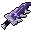 底なしの大剣Bottomless Greatsword | 岩鯨Stone Whale | 巨神斬りTitan Cleave | 奈落断ち: 振った扇が 1.2 秒後にもう一度裂けるAbyssal Cleave: the sweep splits again 1.2 s later |
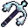 沈み鐘の杖Sunken Bell Staff | 潮殻Tide Shell | 守りの唄Ward Song | 沈む唄: 残った守りが体力に沈み、仲間へ届くSinking Song: leftover wards sink into health for allies |
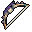 雷淵の弓Stormdeep Bow | 雷翼Thunder Wing | 雲穿ちCloud Piercer | 天落とし: 矢の止まった所へ雷の柱Sky Drop: a lightning pillar where the arrow lands |
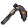 灰喰いの鎌Ash-Eater Scythe | 余燼Ember | 灰散らしAsh Scatter | 這う灰: 灰かぶりの敵のまわりへ灰が移るCreeping Ash: ash spreads among nearby enemies |
心臓を倒した人それぞれに、共鳴の欠片 2 つは必ず、専用アーティファクトは 25%（4 回続けて出なければ次で保証）。持っていれば欠片 10 に替わります。強化・特性・必要 Lv は他のアーティファクトと同じです。Every player who clears the heart gets two resonance fragments for sure and a 25% chance at an artifact (guaranteed after four misses). If you already own it you get ten fragments instead. Enhancement, affixes and level requirements match other artifacts.
書き換えの武器Rewrite weapons
書き換えの武器 8 本は、持っているあいだ、特定の技を別の形に書き換えられます。Eight rewrite weapons can change a specific skill while you hold them. 一覧はスキルのページへ。See the list on the skills page.
装飾品Accessories
護符と装飾品は、持っているだけでは効きません。持ち物の画面の右上の「装飾」のつまみから開く専用の枠に付けたときだけ効きます。持ち物にある品を右クリックしても付けられます。Charms and accessories do nothing from the inventory. They work only in the dedicated slots opened from the "Accessories" tab at the top right of the inventory; right-clicking an item in your inventory also equips it.
護符（1 枠）Charm (1 slot)
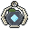
共鳴の護符Resonance Charm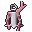
潮鳴りの護符Tide Chime Charm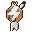
嵐の護符Storm Charm- 熾りの護符Kindling Charm
使って効く品です。H で使い、待ち時間があります。Used actively with H; has a cooldown.
装飾（2 枠）Accessories (2 slots)
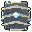
岩鯨の補強板Stone Whale Plating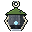
苔の護石Moss Talisman- 月潮の真珠Moontide Pearl
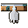
嵐纏の足環Stormclad Anklet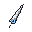
嵐の目の羽根Feather of the Storm's Eye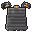
熾火の外套Embercloak- 余燼の灯Last Ember Lantern
付けているあいだ効く品です。巨神ごとの「鼓動守」は、心臓の戦いで一度だけ致命の一撃を体力 1 で耐えます。Work while worn. Each titan's Heartbeat Ward lets you survive one fatal blow at 1 health, once per heart fight.
防具Armor
巨神ごとに、立体の防具一式（兜・胸当て・脚・靴）があります。防御力そのものではなく、強靭（防具強度）と特性で強くなります。Each titan has a full 3D armor set (helmet, chestplate, leggings, boots). They scale through toughness and affixes rather than raw defense.
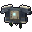
岩鯨の甲殻の胸当てStone Whale Chestplate- 潮殻の胸甲Tide Shell Cuirass
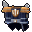
雷翼の羽衣・胸当てThunder Wing Mantle Breastplate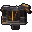
余燼の胸当てEmber Breastplate
- 防具には必要レベルがあり、足りないと着られません。Armor has a required level and cannot be worn below it.
- 武器は必要レベルが足りなくても持てますが、素手と同じ力しか出ません。Weapons can be held below their level but deal only bare-hand damage.
必要レベルRequired levels
推奨レベルから、コモン〜エピックは −4、ヒロイック以上は −2 です。Common to Epic is the recommended level -4; Heroic and above is -2.
| 巨神Titan | コモン〜エピックの必要 LvCommon to Epic | ヒロイック以上の必要 LvHeroic and above |
|---|---|---|
| 岩鯨（推奨 12）Stone Whale (rec. 12) | 8 | 10 |
| 潮殻（推奨 18）Tide Shell (rec. 18) | 14 | 16 |
| 雷翼（推奨 24）Thunder Wing (rec. 24) | 20 | 22 |
| 余燼（推奨 30）Ember (rec. 30) | 26 | 28 |